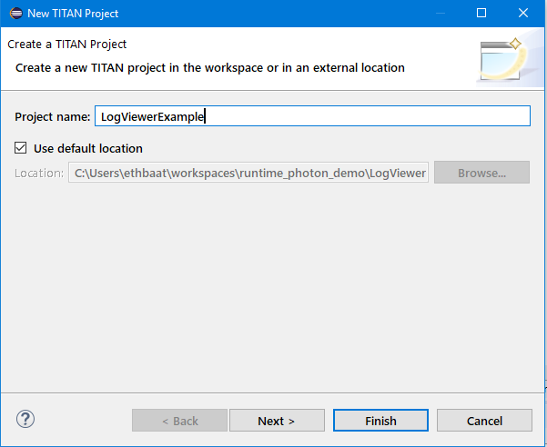

The Create Project action is used creating a TITAN Project or a TITAN Java Project
Select File / New / TITAN Project from the main menu.

Enter project name and location.
By default, the project will be created in the directory of the workbench. It is not recommended to select a path that contains special characters.
At this point you can either select either Finish or Next.
If you select Next you can customize some project properties
The final project is only created when you select Finish.